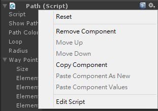
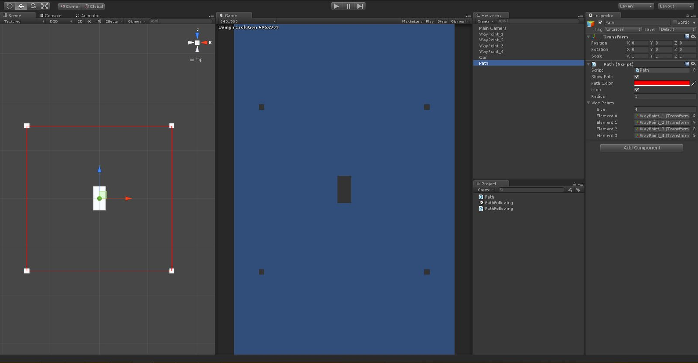
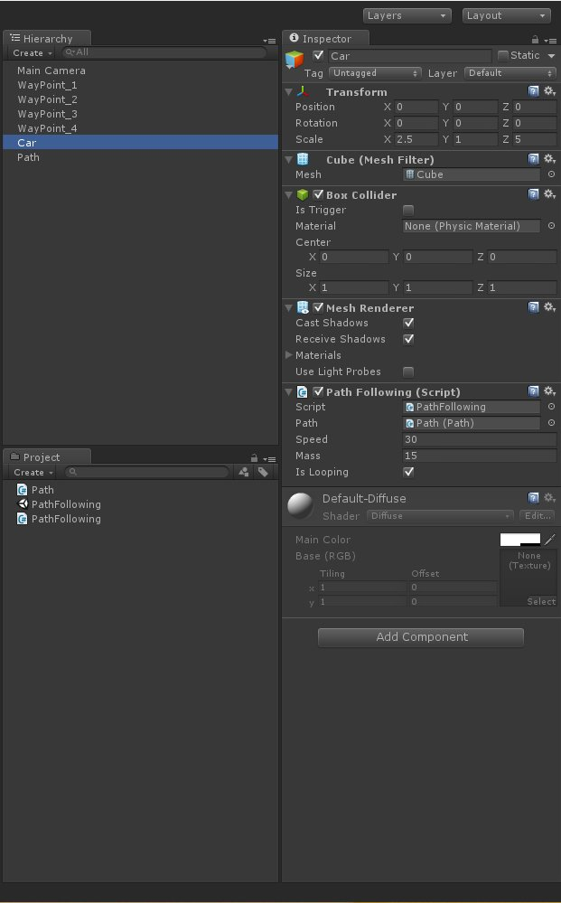
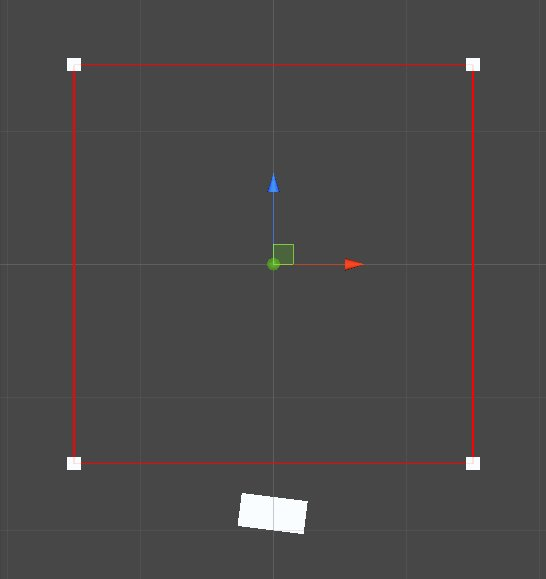

Path Following 大多數用在 AI 的路徑移動
針對事前規劃好的移動路徑
呈現出 AI 在移動巡邏的行為
原理相當簡單
大家看完後也可以自行使用不同的方法應用
先建立一個新專案
接著建立一個 Path.cs 腳本
這個腳本是用來規劃 AI 的移動路徑
並將其顯示以供遊戲開發者調整
using UnityEngine;
using System.Collections;
public class Path : MonoBehaviour {
//Display the path
public bool showPath = true;
public Color pathColor = Color.red;
//The path is loop or not
public bool loop = true;
//The waypoint radius
public float Radius = 2.0f;
//Waypoints array
public Transform[] wayPoints;
//The Reset fuction is one of Unity API.
//MonoBehaviour.Reset()
//http://docs.unity3d.com/ScriptReference/MonoBehaviour.Reset.html
//This function is only called in editor mode.
void Reset() {
//Reset the wayPoint array
wayPoints = new Transform[ GameObject.FindGameObjectsWithTag ("WayPoint").Length ];
for( int cnt = 0; cnt < wayPoints.Length; cnt++ ) {
wayPoints[cnt] = GameObject.Find( "WayPoint_" + (cnt + 1).ToString() ).transform;
}
}
//Get the length of wayPoint array
public float Length {
get {
return wayPoints.Length;
}
}
//Get the position in the array with its index number
public Vector3 GetPosition(int index) {
return wayPoints[index].position;
}
//The OnDrawGizmos function is one of Unity API
//MonoBehaviour.OnDrawGizmos()
//http://docs.unity3d.com/ScriptReference/MonoBehaviour.OnDrawGizmos.html
//This function will display gizmo in Scene and will not display in Game
void OnDrawGizmos() {
//If showPath is false, return
if (!showPath) return;
//Draw the path line
for ( int i = 0; i < wayPoints.Length; i++ ) {
if (i + 1 < wayPoints.Length) {
Debug.DrawLine( wayPoints[i].position, wayPoints[i + 1].position, pathColor );
}
else {
if( loop ) {
Debug.DrawLine( wayPoints[i].position, wayPoints[0].position, pathColor );
}
}
}
}
}
6~17
一些基本參數的定義
19~34 Reset
接著要介紹 Unity 中的一個實用方法
MonoBehaviour.Reset()
這個方法是應用在 Inspector 中 Component 的 Reset 裡
它可以幫助使用者快速的重新定義
這裡就是使用它來重新抓取命名為：WayPoint_X 的物件
所以如果使用者有多的物件時
不需要一個一個重新抓取
只需要點一下 Reset 就可以立即更新


using UnityEngine;
using System.Collections;
public class PathFollowing : MonoBehaviour {
public Path path;//The path
public float speed = 20.0f;//following speed
public float mass = 5.0f;//this is for object mass for simulating the real car
public bool isLooping = true;//the car will loop or not
private float curSpeed;//Actual speed of the car
private int curPathIndex;
private float pathLength;
private Vector3 targetPosition;
private Vector3 curVelocity;
void Start () {
pathLength = path.Length;
curPathIndex = 0;
//get the current velocity of the vehicle
curVelocity = transform.forward;
}
void Update () {
//Unify the speed
curSpeed = speed * Time.deltaTime;
targetPosition = path.GetPosition( curPathIndex );
//If reach the radius within the path then move to next point in the path
if ( Vector3.Distance(transform.position, targetPosition) < path.Radius ) {
//Don't move the vehicle if path is finished
if ( curPathIndex < pathLength - 1 )
curPathIndex++;
else if ( isLooping )
curPathIndex = 0;
else
return;
}
//Calculate the acceleration towards the path
curVelocity += Accelerate( targetPosition );
//Move the car according to the velocity
transform.position += curVelocity;
//Rotate the car towards the desired Velocity
transform.rotation = Quaternion.LookRotation( curVelocity );
}
//Steering algorithm to steer the vector towards the target
public Vector3 Accelerate( Vector3 target ) {
//Calculate the directional vector from the current position towards the target point
Vector3 desiredVelocity = target - transform.position;
//Normalise the desired Velocity
desiredVelocity.Normalize();
desiredVelocity *= curSpeed;
//Calculate the force Vector
Vector3 steeringForce = desiredVelocity - curVelocity;
Vector3 acceleration = steeringForce / mass;
return acceleration;
}
}
6~18
參數定義
要注意的是 curPathIndex 這個參數
這個參數是用來記錄當前的目標點
車子會依照這個 int 來做目標點的轉換
20~29 Start
MonoBehaviour.Start()
31~59 Update
MonoBehavior.Update()
每 frame 都會執行一次 Update 裡的方法
為了統一速度參數而使用了 Time.deltaTime
當我們把參數乘上 Time.deltaTime
在這個範例中可以把它想成：每秒移動 curSpeed 公尺
如果不使用 Time.deltaTime 的話則是：每 frame 移動 curSpeed 公尺
兩者會有極大的差距
Time.deltaTime
接著就是判斷 car 與目標的位置如果接近到一定距離
則將目標點設為下一點
並計算其加速度
這裡還可以到 Quaternion.LookRotation() 這個方法
這個方法是用來返回一個 Quaternion
因為 transform.rotation 本身定義是一個 Quaternion
所以需要使用這個方法才不會導致編譯出錯
61~78 Accelerate
計算加速度
這裡只是簡單的數學運算
要注意的只有 desiredVelocity.Normalize()
Vector3.Normalize() 是將向量規一化
將向量規一化後在乘上我們的速度就能得到下一步的移動速度
接著回到 Hierarchy 進行設定
將 Path 物件拖拉至 PathFollowing 中
並填入想要的速度及重量

